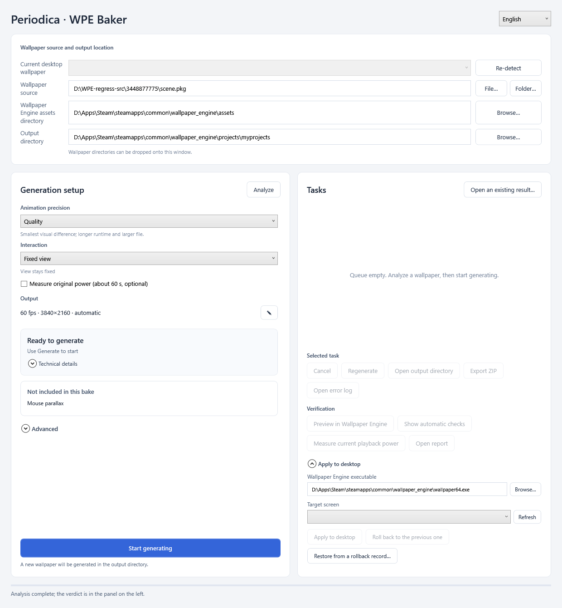

Your wallpaper renders forever.
Bake it once.
Periodica models a Wallpaper Engine scene’s entire animation math, retunes its periods until the whole scene closes into one loop, and plays it back as video. Nearly the same look; up to 96% less GPU load and power, plugged in or on battery. Its first application is WPE Baker, for Wallpaper Engine.
Solved from the math, so it always closes.
A frame-comparison tool guesses where a video might repeat. Periodica reads the equations that produce the motion — shader time, animation tracks, particle cycles, video timebases — and retunes them into one common period. Drag the divider: the first frame and the last frame of the 50-second loop above.

 frame 1frame 3,000
frame 1frame 3,000
Most scenes have no period. Periodica makes one.
A wave at 7.3 s, a sway at 11.1 s, a particle cycle at 4.6 s and a video at 20 s almost never return to the same phase together; a naive recording would need hours to repeat and would still show a cut. Periodica solves each component's own period, then retunes their speeds by a fraction of a percent so they share one common loop — a period the artist never authored.
A visible-change budget
Three presets cap how far any component may be retuned: Efficiency 5%, Balanced 3%, Quality the smallest change that still closes. Yuri's 100 periodic components were reconciled into one 180.4 s loop; Nijika's 20 into 44 s; Ayanami Rei's scene closes in 56.2 s with a total retime of 4.68%.
Rules that keep the changes nearly invisible
The slowest visible component completes at least three cycles per loop; visible drift stays under 0.2 px/s; sways are retuned in frequency only, never in path. Every retune is bounded per component and listed in the report. If the rules cannot be met, the layer stays live and the report says which one.
Every seam verified frame by frame against the original
Every output is rendered past its loop point and compared tile by tile with the original's next frame before it is accepted; that proves the loop closes, and the per-component budget bounds how far any motion drifts from the original over the whole loop.
Drop a scene in, get a verdict.
Two controls and one verdict. Animation precision bounds how far any motion may be retimed; Interaction decides what input-driven content does. Advanced holds the options for power users.
Drop the wallpaper folder in
From steamapps\workshop\content\431960. The output directory is Wallpaper Engine's own project folder, so the result appears in its list.
Animation precision · Interaction
Quality, balanced and efficiency are the visible-change budget; balanced is the default. If the loop does not close inside the current budget, the solver steps down a level and retries, and the verdict says which one it used. Keep, fixed view or off is what mouse and audio do. Clocks, dates and media text stay live in every mode.
Read the verdict
One of four fixed states. "Not included in this bake" lists what was left out. If your settings do not close but another pair does, the report offers it as a single click.

Every number here comes from a real measurement.
Intel Arc B390 laptop, official Wallpaper Engine, A/B/B/A runs at 60 fps, RAPL iGPU rail. Original scene against its baked output.


| Wallpaper | Original | Baked | Change | Route |
|---|---|---|---|---|
| Nijika (Bocchi the Rock!)3650475846 | 22.51 W | 1.86 W | −91.7% | whole frame |
| Alone (day/night scene)3448877775 | 5.66 W | 1.05 W | −81.5% | state split + layers |
| Atri — My Dear Moments3669681034 | 8.45 W | 0.81 W | −90.4% | effect prefix |
| Ultraman Leo3685247684 | 9.13 W | 2.46 W | −73.0% | effect prefix + live layers |
| Yuri3572877776 | 2.38 W | 0.71 W | −70.3% | whole frame |
| Frieren — Pagoda of flowers3426865175 | 10.09 W | 3.50 W | −65.3% | fixed view + layers |
| Lost Landscape 33713073223 | 8.11 W | 3.48 W | −57.1% | effect prefix |
| Ayanami Rei3258032485 | 2.29 W | 0.19 W | −91.8% | whole frame |
Max out the refresh rate. The fans still stay off.
A heavy wallpaper costs the GPU roughly twice as much at 120 fps as at 60; a fully baked output barely notices: the decoder does the work and the 3D engine idles. This project started on an iGPU laptop.
| Wallpaper | Original 60 → 120 fps | Baked 60 → 120 fps | Baked at 120 vs original at 60 | Package power, 120 fps |
|---|---|---|---|---|
| Atri3669681034 · effect prefix | 8.45 → 16.25 W | 0.81 → 1.51 W | −82% | 30.3 → 12.2 W (−60%) |
| Ayanami Rei3258032485 · whole frame | 2.29 → 7.77 W | 0.19 → 0.31 W | −86% | 19.6 → 10.9 W (−45%) |
| Yuri3572877776 · whole frame | 2.38 → 6.70 W | 0.71 → 1.35 W | −43% | 19.7 → 12.3 W (−38%) |
| Ultraman Leo3685247684 · effect prefix + live layers | 9.13 → 17.29 W | 2.46 → 8.80 W | −4% | 30.1 → 20.6 W (−31%) |
| Atri at the panel's full 165 Hz | Original | Baked | Change |
|---|---|---|---|
| iGPU rail | 26.03 W | 3.95 W | −84.8% |
| CPU package | 41.44 W | 15.36 W | −62.9% |
| 3D engine busy | 86.9% | 29.2% | decoder takes 21.8% |
Deterministic motion is baked. Input stays input.
Baked into the loop
- Shader animation with a provable period — waves, sways, pulses, scrolls
- Animation tracks, sprite sheets, particle cycles
- Embedded video loops and their timebases
- Static art, at full resolution
Treated as inputInteraction: keep · fixed view · off
- Mouse parallax and pointer effects
- Audio-reactive layers and spectrums
- Clocks, dates, day/night switching
- Interactive panels and customization scripts
Default: fixed view. Clocks, dates and media text stay live in every mode. Keep: experimental, may increase GPU load.
Every screen that loops is a candidate.
Wallpaper Engine, Windows
One admission check for analysis and bake, no automatic re-renders, balanced precision and fixed view by default, at most four video groups, verified one-click suggestions, day/night state splitting.
Passthrough controller
The baked video as a layer inside the original scene, so pointer and audio effects keep running on top of it at their own cost.
Temporal reconstruction
Bake at a fraction of the resolution with sub-pixel jitter; reconstruct at playback from motion vectors solved offline. Better inputs than DLSS gets in a game, at a fraction of the decode.
Any looping surface
Phone live wallpapers, lock screens, kiosks, stream backdrops. Wallpaper Engine is the first screen Periodica runs on.
Short answers.
What is the simplest thing I get?
Your favorite wallpaper at its highest refresh rate and quality, and the fans stay off. That is the whole reason this exists.
Will it make every wallpaper cheaper?
Light scenes have nothing to save, and it says so before rendering. Heavy, mostly periodic scenes are where the 46–96% savings come from; interaction-heavy scenes get their deterministic core baked and the rest treated as input.
Does the loop look different from the original?
You choose the visible-change budget — efficiency, balanced or quality — and the report lists every retimed component with its exact percentage. Seams are validated against the original's own motion before an output is accepted.
What do I need?
Windows, Wallpaper Engine, and a GPU for the offline render. The portable build has no installer and no Python. Baking a typical scene takes minutes; playback needs only hardware video decode.
Is it open source?
Yes. Tooling under MIT, the renderer under GPL v2; full source, third-party notices and build records are in the repository.